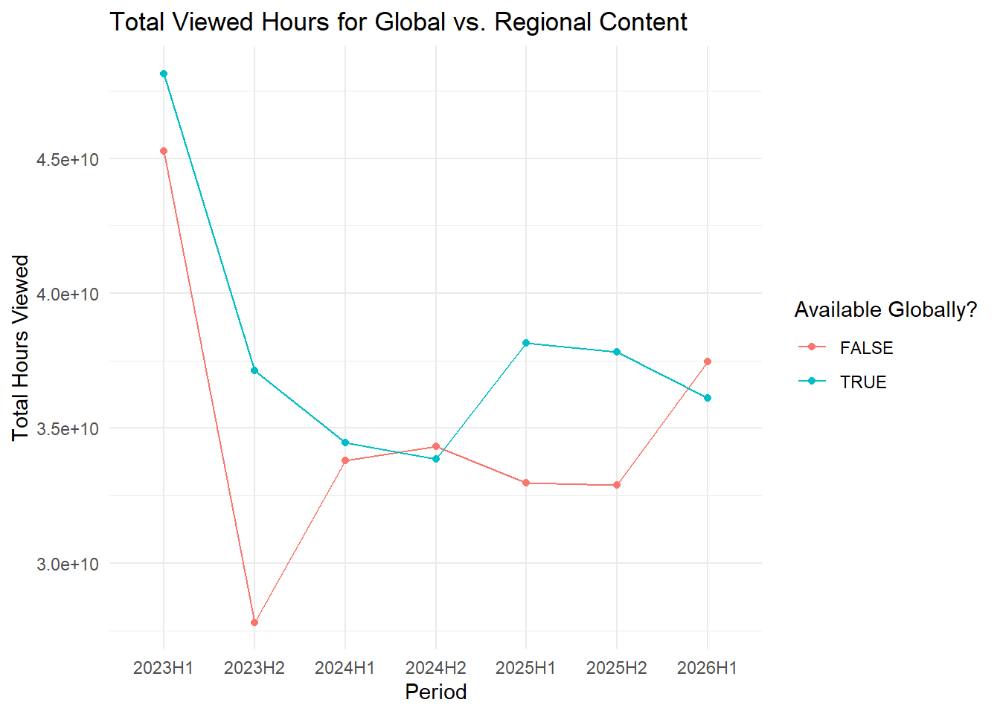

Mini-Project 01: What We Watched: Exploring Netflix Viewing Data
Author: Khushi Gandhi Completion Date: October 16th, 2026
Introduction
Netflix is a prominent leader in the streaming industry and has contributed significantly to consumer entertainment preferences. In the early 2000s, Netflix was a competitor in the physical media distribution industry with competition like Redbox and Blockbusters. At the time, most businesses in this market focused on the short-term market and being profitable there. However, the transition to the digital age was a looming concern and Netflix responded proactively, introducing streaming services.
Almost two decades later, Netflix is a global phenomenon that has revolutionized entertainment access on-the-go. Streaming companies such as Disney+, Hulu, Amazon Prime Video and Paramount+, have entered the market due to this change in consumer needs and the documented success Netflix has created with its own business structure.
Starting in the first half of 2023, Netflix began to release “What We Watched” reports. They were urged to do so by advertisers that needed to know the likelihood of viewers coming across their content and Hollywood who with concerns on whether creators were paid appropriately relative to viewership statistics for those projects. This project explores viewership and other features reported by Netflix from the first half of 2023 to the first half of 2026.
Data Acquisition, Preparation and Cleaning
The data was acquired from Netflix’s online publications for their “What We Watched” reports. The reports were standardized across formatting and compiled into one collective data set which this project refers to as NETFLIX_DATA.
Code
#' Acquire Netflix What We Watched Reports#' #' This function will acquire and standardize all data for MP#01#' from Netflix. Because Netflix hosts the data files behind a CDN, we#' are accessing the release pages and automatically extracting links to the#' relevant files (with CDN hash). #' #' After import, files are stacked vertically and some basic cleaning is#' performed. load_netflix_data <-function(){# Note to students: Make sure you have installed the tidyverse and fs packages# before beginning this assignment. If you aren't sure,# simply run `library(tidyverse)` at your R Console and, if# you don't see an error message, `tidyverse` has been # installed. (Same for `fs`) If you still need to install# either package, use the `install.packages` function as # demonstrated in class.library(tidyverse)library(rvest)library(readxl)library(fs) data_dir <-path("data", "mp01")if(!dir_exists(data_dir)){dir_create(data_dir, showWarnings=FALSE, recurse=TRUE) } NETFLIX_URLS <-list(`2023H1`="https://about.netflix.com/news/what-we-watched-a-netflix-engagement-report",`2023H2`="https://about.netflix.com/news/what-we-watched-the-second-half-of-2023",`2024H1`="https://about.netflix.com/news/what-we-watched-the-first-half-of-2024",`2024H2`="https://about.netflix.com/news/what-we-watched-the-second-half-of-2024",`2025H1`="https://about.netflix.com/news/what-we-watched-the-first-half-of-2025",`2025H2`="https://about.netflix.com/news/what-we-watched-the-second-half-of-2025",`2026H1`="https://about.netflix.com/news/what-we-watched-the-first-half-of-2026" ) download_if_needed <-function(url, local){if(!file_exists(local)){download.file(url, local, quiet =TRUE, mode ="wb") }return(local) } NETFLIX_URLS |>map(read_html) |>map(html_element, xpath ="//a[contains(@href, '.xlsx')]") |>map_chr(html_attr, "href") |>enframe("period", "url") |>mutate(path =path(data_dir, paste0(period, ".xlsx")), path =map2(url, path, download_if_needed), data =map(path, read_excel, skip=3, na="*"), data =map(data, \(x) x |>mutate(`Release Date`=as.Date(`Release Date`)))) |>unnest(data) |>select(-url, -path) |>mutate(year=str_sub(period, 1, 4), half=str_sub(period, start=6), period_start =make_date(year, if_else(half==1, 1, 7), 1), period_end =make_date(year, if_else(half==1, 6, 12), if_else(half==1, 30, 31))) |>filter(!is.na(`Hours Viewed`)) |>mutate(live_event =!is.na(Runtime) &str_detect(Runtime, "\\d+:\\d+\\*"), clean_time =str_remove(Runtime, fixed("*")),Runtime =60*hour(hm(clean_time)) +minute(hm(clean_time))) |>select(-clean_time) |>mutate(Runtime =coalesce(Runtime, mean(Runtime, na.rm=TRUE)), .by=Title, Title = stringi::stri_trans_general(Title, "Latin-ASCII"),Title =str_remove(Title, " // .*"), Title =str_remove(Title, "[^[:ascii:]].*"), Title =str_trim(Title)) |>filter_out(Title =="") |>select(year, period, period_start, period_end, Title, -half, Runtime, Views, `Hours Viewed`, `Release Date`,`Available Globally?`, live_event)}NETFLIX_DATA <-load_netflix_data() |>rename(title ="Title", runtime ="Runtime",views ="Views", hours_viewed ="Hours Viewed", release_date ="Release Date", available_globally ="Available Globally?") |>mutate(year =as.integer(year), available_globally = available_globally =="Yes")
To prepare the data for this project, two main actions were taken. First was converting column names into “tidy” ones. Some changes were not as significant and involved adding an underscore or making something lowercase. Other changes involved features that could potentially cause errors while coding. The second change made was a conversion of data types for year and available_globally. They were converted to integers and logical values respectively.
The updated variables and what they measure are listed here:
year: The year in which that entry was recorded.
period: This has one of seven values and represents either the first or second half a given year. For example, 2026H1 is the first half of 2026.
period_start: The date at which a given period starts.
period_end: The date at which a given period ends.
title: The name of some recorded movie or T.V. show.
runtime: Runtime is how long a title is (given in minutes).
hours_viewed: The total view time in hours for a title.
views: An approximate number of views for a title (hours_viewed/runtime).
release_date: The date at which a title became available.
available_globally: TRUE/FALSE value for whether a title is available around the world.
live_event: TRUE/FALSE value for whether a title was a live event.
Initial Data Exploration
This section is dedicated to better understanding NETFLIX_DATA.
The analysis for this data began with an Exploratory Data Analysis pass through the glimpse and skim functions. Running these functions gave an overview of the number of records as well as the key features for each record. It also provided a general understanding of data types present. In this case, strings, characters, dates and logical statements were among the few included. Understanding how data is structured before working with it provides essential guidelines on how to approach questions.
Running the glimpse function shows that NETFLIX_DATA contains 61,892 records with 11 features in each. This confirms some key details about the data. Firstly, the output reflects the changes to the column names from earlier. The names are now “tidy” and avoid punctuation, uppercase and spaces. Second, each variable’s type is clearly stated. This data has values with types int, chr, date, dbl, and lgl. Had the types for year and available_globally not been manually converted in a previous step, the results of glimpse would have signaled that the change was necessary. Lastly, glimpse outputs an overview of some values in the dataset. The only thing to be cautious about from the current output is the NA values for views and runtime. Knowing the data contains NA values is a caution to be intentional with in the information used in data analyses to come.
The Skim Function
Code
skim(NETFLIX_DATA)
Data summary
Name
NETFLIX_DATA
Number of rows
61892
Number of columns
11
_______________________
Column type frequency:
character
2
Date
3
logical
2
numeric
4
________________________
Group variables
None
Variable type: character
skim_variable
n_missing
complete_rate
min
max
empty
n_unique
whitespace
period
0
1
6
6
0
7
0
title
0
1
1
217
0
24427
0
Variable type: Date
skim_variable
n_missing
complete_rate
min
max
median
n_unique
period_start
0
1.00
2023-01-01
2026-01-01
2024-01-01
7
period_end
0
1.00
2023-06-30
2026-06-30
2024-06-30
7
release_date
35251
0.43
2010-04-01
2026-06-29
2021-06-17
2487
Variable type: logical
skim_variable
n_missing
complete_rate
mean
count
available_globally
2
1
0.35
FAL: 40171, TRU: 21719
live_event
0
1
0.01
FAL: 61582, TRU: 310
Variable type: numeric
skim_variable
n_missing
complete_rate
mean
sd
p0
p25
p50
p75
p100
hist
year
0
1.00
2024.11
1.08
2023
2023
2024
2025
2026
▇▅▁▅▂
runtime
13085
0.79
467.35
694.71
2
210
320
545
23853
▇▁▁▁▁
views
18198
0.71
1375241.45
3630933.22
100000
100000
400000
1200000
144800000
▇▁▁▁▁
hours_viewed
0
1.00
8265858.27
24924226.03
100000
500000
1800000
6400000
964100000
▇▁▁▁▁
The skim function provides summary statistics for each variable by their type. This is a better alternative to the summary function because it provides more detail about the different values in the data. For example, above, in addition to summary statistics, the count of missing and unique values for some variables are given. Notably, there are 13,085 and 18,198 missings for runtime and views respectively.
While glimpse() alluded to this issue earlier, the exact count helps visualize the extent to which NA values as present. This issue is something to consider when choosing how to analyze viewership. For logical values, there is also a count of TRUE and FALSE for each category. While skim() provides an extensive amount of information about the data, it is better to be more informed than not. Furthermore, the built-in formatting makes the information simple to interpret.
Exploratory Questions
What date range is covered by this data set?
The date range covered by this dataset is January 01, 2023 to June 30, 2026. These values can be obtained by finding the earliest date in the period_start column and the latest date in the period_end column.
How many different shows and movies are covered in this data set?
There are 24,427 different shows and movies covered by this dataset. Grouping the data across title consolidates multiple entries for the same titles across different periods. Simply summarizing the number of rows after grouping results in how many shows and movies are present in the data. This information was also available in the skim() summary from an earlier step.
How many total hours have been spent watching shows from the Bridgerton universe?
The total hours spent watching shows from the Bridgerton universe was 4,862,800,001. To find this value, NETFLIX_DATA was filtered by titles that contained the word “Bridgerton” and totaled across the hours_viewed for that subset.
How many total hours have been spent watching the five seasons of Stranger Things?
5,548,500,000 hours were spent watching the five seasons of “Stranger Things”. To find this value, NETFLIX_DATA was filtered by including titles that contained the words “Stranger Things” and excluding those with words in the spin-off titles. For the final result, the hours_viewed were totaled across that subset.
What percentage of total watch time was spent on the Top 10 titles of 2026H1?
6.70% of the total watch time was spent on the Top 10 titles of 2026H1. To obtain this result, the sum of total hours_viewed for the top ten titles in 2026H1 were written as a fraction of the sum of total hours_viewed across all titles.
What fraction of Netflix’s catalog is globally available?
By title, 24.60% of Netflix’s catalog is globally available. To obtain this result, the data was grouped by title, filtered by TRUE values for available_globally and divided by the count total titles.
By hours_viewed, 51.92% of Netflix’s catalog is globally available. First, the data was filtered by TRUE values for available_globally and hours_viewed for that subset were aggregated. That value was then written as a fraction of hours_viewed across all the data.
What was the top title (by total hours viewed) in each period and what fraction of total viewership did it capture?
Code
NETFLIX_DATA |>group_by(period) |>mutate(frac_viewership =percent(hours_viewed/sum(hours_viewed, na.rm =TRUE), accuracy =0.01)) |>slice_max(hours_viewed) |>select(c("period", "title", "hours_viewed", "frac_viewership")) |>ungroup() |>mutate(hours_viewed =comma(hours_viewed)) |>gt() |>cols_label(period=md("**Period**"), title =md("**Top Title**"), hours_viewed =md("**Hours Viewed**"),frac_viewership =md("**Fraction of Total Viewership**")) |>tab_header(title="Top Titles in Each Period", subtitle="By total hours viewed")
Top Titles in Each Period
By total hours viewed
Period
Top Title
Hours Viewed
Fraction of Total Viewership
2023H1
The Night Agent: Season 1
812,100,000
0.87%
2023H2
King the Land: Limited Series
630,200,000
0.97%
2024H1
Bridgerton: Season 3
733,800,000
1.08%
2024H2
Squid Game: Season 2
619,900,000
0.91%
2025H1
Squid Game: Season 2
840,300,000
1.18%
2025H2
Wednesday: Season 2
964,100,000
1.35%
2026H1
Bridgerton: Season 4
889,800,000
1.20%
To determine the top title in hours viewed for each period, the data was first grouped by period. A new column, calculating the fraction of total viewership for each title was attached to the data frame. The column values were calculated by dividing the hours_viewed for a title by the total hours_viewed for that period. The slice_max() function was then used to isolate the top title by viewership in hours for each period. After applying the gt() package to format the table values, the above output was obtained. The title that captured the highest fraction of total viewership in its period was “Wednesday: Season 2” at 1.35%. Furthermore, three of the listed titles are Korean dramas, which may signal a change in consumer entertainment preferences.
How has Netflix’s catalog changed in size over the periods for which we have questions?
Code
NETFLIX_DATA |>group_by(period) |>summarise(title_count =n(), sum_runtime =sum(runtime, na.rm =TRUE)) |>mutate(title_count =comma(title_count), sum_runtime =comma(round(sum_runtime/60, 0))) |>select(c("period", "title_count", "sum_runtime")) |>ungroup() |>gt() |>cols_label(period=md("**Period**"), title_count =md("**Title Count**"), sum_runtime =md("**Total Runtime (hours)**")) |>tab_header(title="An Analysis of Netflix's Catalog Each Period", subtitle="By title count and total runtime")
An Analysis of Netflix's Catalog Each Period
By title count and total runtime
Period
Title Count
Total Runtime (hours)
2023H1
18,196
43,717
2023H2
6,595
50,117
2024H1
6,797
51,774
2024H2
6,877
53,615
2025H1
7,502
58,374
2025H2
7,738
59,714
2026H1
8,187
62,855
To understand how Netflix’s catalog has changed over time, first the data was grouped by period. For each period, the number of titles were recorded and the runtime across those records was aggregated. The new title count and aggregated run time in hours columns were attached to the data frame. After some table formatting, the above output was obtained.
Notably, there is a significant drop in total titles from the first half of 2023 to most recently, the first half of 2026. This is a questionable output as it is clear that the streaming industry has become increasingly popular in recent years. However, Netflix has pushed more focus on vertical integration, or producing their own content in house. While this is not a new change, it is definitely more evident now than before. It may be true that Netflix decided to drop thousands of titles because they may have not had enough viewership or the push for vertical integration meant dropping more externally-produced content.
Which titles have had the most consistently high viewership across all periods? These shows are likely to be ‘staples’ that viewers fall back on as ‘comfort food’, e.g., re-runs of Friends.
The titles listed in the table above have had the most consistently high viewership across all periods, To answer this question, the data was grouped by title and summarized across the number of periods the title was present, average hours viewed, standard deviation of the hours viewed and the minimum hours viewed for each title. In this analysis, hours_viewed was used over views due to the substantial amount of missing values in the latter category.
Finding the minimum viewership for each title and taking that value’s maximum results in titles that consistently have high viewership. For example, a show like “The Night Agent: Season 1” does have high viewership but it is not consistent in all periods. Taking the maximum of minimum viewership addresses this issue. For a show like “Suits (2011): Season 1”, 97 million views means it was amassing significant viewership in its worst performing period.
The table also shows values for standard deviation for average hours viewed. While these values seem numerically large, they can be interpreted as a consistency measure for viewership across periods. For example, every entry above for “Breaking Bad” has a standard deviation that is a relatively small fraction of its average viewership. This indicates that these seasons of “Breaking Bad” had stable average viewership across most periods.
Within each period, what fraction of time was spent on ‘shows’ vs movies?
To answer this question, it is necessary to establish what classifies something as a show versus a movie. Unfortunately, no identifier exists in the data for this classification. To address this a column was added using an ifelse statement. If the title contains the words “Season”, “Series”, “Limited”, “Episode”, “Part”, and “Volume”, it was labelled a show. The same label is also given for titles with no recorded runtime or that of over 240 minutes (~4 hours). Anything else was classified as a movie.
This condition alone raises many challenges. It is already known from a previous step that runtime contains 13,085 missing observations which immediately get classified as shows. The keywords also used to identify shows cover many show titles but most likely not all.
To capture fractions of viewership, total viewing hours are calculated for each type of title. In the table above, movies in the first half of 2023 captured about 28% of total viewership. There is a significant drop in this value going forward. In the next six periods, there is a split of 1-3% and 97-99% for movies and shows respectively.
In addition to the issue with conditional logic and incomplete data, it may be worthwhile to consider the significant drop in titles seen from 2023H1 to following periods. Between the first and second half of 2023, there was a 63.76% drop in titles available in Netflix’s catalog. It is possible that many unpopular movies were removed or there was a shift in focus to shows. Consumer entertainment preferences have changed significantly so it is not impossible that these extreme amounts of viewership in each period came from shows.
How does the performance of live events compare to pre-taped content? Does the average live event draw more viewership than an average piece of pre-taped content? How about a ‘top tier’ live event vs ‘top tier’ pre-taped content?
Code
top10views = NETFLIX_DATA |>group_by(live_event, title)|>summarise(avg_views=mean(views, na.rm =TRUE), .groups ="drop_last") |>slice_max(avg_views, n =10) |>summarise(avg_top10 =mean(avg_views))NETFLIX_DATA |>group_by(live_event) |>summarise(avg_view=mean(views, na.rm =TRUE)) |>left_join(top10views, by ="live_event") |>gt() |>cols_label(live_event=md("**Live Event?**"), avg_view =md("**Average Views**"), avg_top10 =md("**Average Top Tier Views**")) |>tab_header(title="Average Views for Live Events vs. Pre-taped Content") |>fmt_number(decimals =0)
Average Views for Live Events vs. Pre-taped Content
Live Event?
Average Views
Average Top Tier Views
FALSE
1,374,152
67,553,333
TRUE
1,527,742
9,492,308
Live events have more average views than pre-taped content. However, it is the opposite case for top tier live events and pre-recorded content. To reach this conclusion, a subset of the data grouped by live_event and title was created. The ten titles with the highest average views were pulled from that subset. That column was joined with a second subset grouped by live_event and summarized by average views. views was chosen in this analysis because for a comparison with live events, it is likely that viewers are not re-watching. Therefore, the hours_viewed for live events would be significantly lower in general and not a good measure of average viewership.
Corporate Memo
To: Netflix Leadership From: Khushi Gandhi, Data Analyst Date: October 16th, 2026 Subject: Netflix’s Original Content Strategy for 2027
Netflix continues to see success in viewership rates and performance across the last seven periods reported. After analyzing specific areas for improvement, two main strategies for Netflix’s 2027 original content are recommended which are outlined below.
Global Availability vs. Regional Content
Recommendation: Netflix should release currently available regional titles globally or put effort toward global releases in general.
In terms of consumer preferences, there has been a significant shift in what consumers are watching. One of the most memorable examples of this was in 2021, when Netflix’s Korean drama series “Squid Game” became a global hit. However, this change was not overnight. Titles such as “Alice in Borderland” (Japan), “Money Heist” (Spain), and “Lupin” (France) have all been recognized internationally. Despite language barriers and cultural differences, the appreciation for these series lies in the stories. Therefore, I believe there should be a push to make regional content available globally or Netflix should produce more global content in general.
To obtain a general overview of this shift in preferences, we can take a look at the snapshot below of the top 10 titles in terms of viewership grouped across global availability and titles. Essentially, we are subsetting the titles with the most average hours viewed and comparing their global availability status.
All except one show, were titles that were globally available and still amassed a significant amount of views. Notably, of the titles available globally, five of them are international series. This is something to keep in mind when considering changes to Netflix’s catalog.
The graph below displays the trend lines for views for global and regional titles across the seven periods.
Code
global_stats = NETFLIX_DATA |>group_by(available_globally, period) |>summarise(sum_hr_view =sum(hours_viewed, na.rm =TRUE), .groups ="drop") |>drop_na()NETFLIX_DATA|>group_by(available_globally, period) |>summarise(sum_hr_view =sum(hours_viewed, na.rm =TRUE), .groups ="drop") |>drop_na()|>ggplot(aes(period, sum_hr_view, group = available_globally, color = available_globally)) +geom_point() +geom_line() +labs(x ="Period", y ="Total Hours Viewed", color ="Available Globally?", title ="Total Viewed Hours for Global vs. Regional Content") +theme_minimal()

Both trend lines have a significant drop in total views but this is expected due to the 63.76% reduction in available titles between the first and second half of 2023. In terms of global availability status, there is no clear pattern. Views for global and regional content seem to fluctuate continuously. Between the last half of 2025 and the first half of 2026, there is a decrease in total view for global content of about 4.56%. Consequently, there is an increase in the total views for regional content of 13.91%.
In an era where connectivity happens digitally, regional content limits how much of Netflix’s total viewership base can be reached. Of course, shifting focus strategically to global availability requires logistical work but the effort is something to consider. The global viewership base obtained from more widely accessible titles will stay committed to Netflix instead of competitors. For example, a viewer who enjoys a foreign genre may continue to stream on Netflix instead of an alternative if there were more options available in his/her region.
Short-Form vs. Long Form Content
Recommendation: For 2027, Netflix should continue making original long form content, that is with run time of over 240 minutes.
A second question Netflix should consider for its 2027 strategy is whether short-form or long-form content is more valued. To analyze this issue, a filtering based on logical conditioning was run on the data. Netflix produces shows with an average of eight episodes that run for about 30 minutes each. We can assume that the maximum run time for short content is 240 minutes or less. Anything else would be considered long form. This could include shows that have more episodes or longer episode times.
The idea is important to think about because in an era driven by social media, consumers’ attention span has considerably decreased. Reels are extremely popular and even fifteen seconds is sometimes not enough time to capture someone’s attention. It is possible we are experiencing a shift in preference towards short form content in the entertainment industry as well. However, the results of the below table show otherwise.
Code
NETFLIX_DATA |>mutate(len =ifelse(runtime <=240, "short_form", "long_form")) |>group_by(len, period) |>drop_na() |>summarise(avg_hrs_viewed =mean(hours_viewed), .groups ="drop_last") |>pivot_wider(names_from = len, values_from = avg_hrs_viewed) |>mutate(rate = long_form/short_form)|>gt()|>cols_label(period =md("**Period**"),long_form =md("**Long-Form Views**"),short_form =md("**Short-Form Views**"),rate =md("**LF/SF**")) |>fmt_number(decimals =0) |>fmt_number(columns = rate, decimals =1) |>tab_header(title ="Average Hours Viewed for Long vs. Short Form Content", subtitle ="By period")
Average Hours Viewed for Long vs. Short Form Content
By period
Period
Long-Form Views
Short-Form Views
LF/SF
2023H2
16,101,202
3,952,392
4.1
2024H1
15,719,112
3,553,780
4.4
2024H2
15,512,143
3,379,379
4.6
2025H1
15,690,917
3,854,906
4.1
2025H2
15,226,298
3,016,440
5.0
2026H1
14,130,071
2,667,574
5.3
In the table above, we see that long form content views are significantly higher than that of short form. The LF/SF column stands for how many times greater long form views are than short form. In the first half of 2026, long form views were 5.3 times higher than that of short form. Also, if we look at the change in this ratio by year (for each two halves), in 2024 and 2025, there was an increase in this LF/SF ratio throughout the year.
This signals something that contradicts what markets are currently showing. While we believe that short form content is more appreciated with the consumer base, Netflix’s viewers value long form content more. This may be because most long form content is structured in multiple short episodes but because run time is aggregated across a whole season, we consider it long form. Perhaps consumers are engaging more with long form content because they are watching in shorter intervals of time.
Netflix’s historical success will continue if their future strategies are framed around certain areas for improvement.
Conclusion
The “What We Watched” data contains multiple avenues for data exploration whose results can contribute meaningfully to better understanding viewership statistics at Netflix.
NoteAI Usage Statement
Gemini was used to help edit the code in this project, but all non-code text was generated wthout the use of any Generative AI tools.